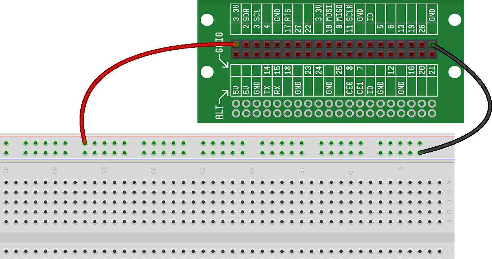
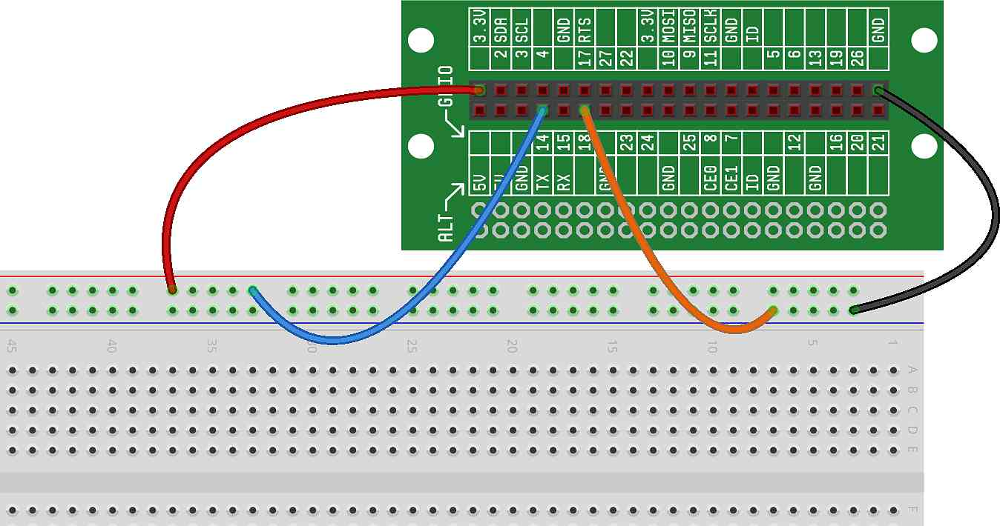

Before jumping into this project, we very strongly recommend that you read , as these concepts will be the basis for this project and many future Ready Set STEM projects.
In the previous tutorial, we talked about the fact that GPIOs can be used as inputs to take information from external components. They do this by reading a voltage at the GPIO input pin. In this project, we'll attach a wire to a GPIO pin, and then read the voltage from our code.
First, we start with an empty breadboard, with power and ground wired from the Lid Connector Board — like this:
For this project, we'll wire two different GPIO pins as inputs — one wired directly to 3.3V (power) and one wired directly to 0V (ground). Connect GPIO14 and GPIO18 to power and ground, respectively, as shown: 
Now that we have two GPIO inputs wired, we can write the code that will read those inputs and print the state (high or low) of the GPIO. Here's what the code will look like:
You may notice that this example is similar to the example, but in this case, we configure the GPIOs as inputs instead of outputs (and we're using two instead of one):
On Lines 2 and 3, we're configuring the GPIOs as inputs.
On Lines 4 and 5, we're getting the state (the voltage) of the input, and printing it.
If everything is wired correctly, when you run the code, you should see:
True False
The True in the first line indicates that the first input was
on. For an Input(), on generally means that the
GPIO is reading high (or 3.3V). False in the second line
indicates that the second input was off. For an Input(),
off generally means that the GPIO is reading low (or 0V). In
other words, inputs are by default active high (as we discussed in
).
Given that the first input was wired to power and the second was wired to ground, this is exactly the result we should expect.
If you wire both GPIOs to 3.3V, and rerun the code, does it print out what you expect?
If you wire both GPIOs to ground, and rerun the code, does it print out what you expect?
Can you change the code (and the wiring) to use different GPIO inputs? How about more than two inputs?
What happens if you disconnect power and ground from the GPIOs completely and rerun the code? Hint: you may not get the same values each time — rerun it multiple times to see. Remember our discussion about "Floating Inputs?"